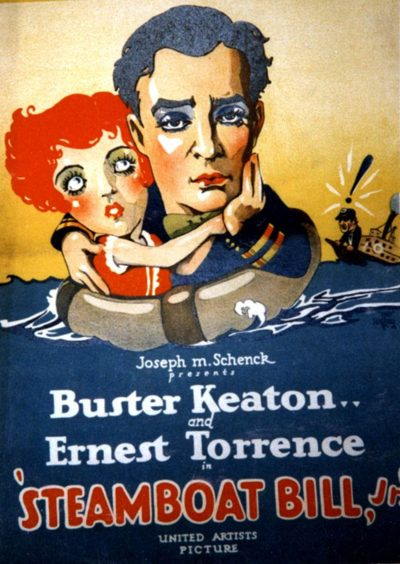

Steamboat Bill, Jr.
1928 silent comedy film by Charles Reisner
Steamboat Bill, Jr. is a 1928 American silent comedy film starring Buster Keaton. Released by United Artists, the film is the final product of Keaton's independent production team and set of gag writers. Charles Reisner directed the film, and the credited story writer was Carl Harbaugh.
Trivia
- The original idea for the film came from Charlie Chaplin collaborator Charles Reisner, who was the director.
- Keaton, who had directed or co-directed many of his earlier films, was an uncredited co-director on this project.
- In June 1927, he traveled to Sacramento, California, and spent over $100,000 building sets, including a pier.
Previous Showings
7 Runs • 3 Festivals
3,479 tickets sold
Original Billings: 1 run (December 12 - 14, 1928)
Original Run: December 12 - 14, 1928 (Wednesday - Friday)
All runs on record (7):
- December 12 - 14, 1928 (Wednesday - Friday)Buster Keaton
- August 12, 1992 · 600 tickets
- March 10, 1995 · 749 tickets
- August 7, 1996 · 827 tickets
- September 12, 2007 · 421 ticketsSummer 2007 63 films in 12 weeks, including 22 films starring Fred Astairew/ The Navigator
- September 9, 2011 · 670 ticketsSummer 2011w/ The Three Ages
- June 11, 2025 · 212 tickets100th Anniversaryw/ Skinner's Dress Suit